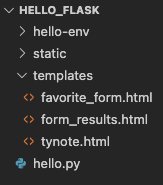

21.8. Styling Flask Templates¶
So far, we’ve used plain HTML for our sample form. However, in the last chapter, we applied some CSS rules to spice up how it looks.
{kind=link}
For our web applications, we definitely want to link a stylesheet to our HTML
templates. To do this, we must save the .css file in a very specific place
within our project.
21.8.1. The static Directory¶
By adding placeholders to our templates, we can change the content on a webpage based on a user’s actions. This makes the page dynamic. Style rules, on the other hand, remain fixed.
CSS code is an example of a static file. It does not change as the user interacts with the page. Other examples of static files include images, video clips, and JavaScript code.
In our Flask project, the templates folder holds all of the .html files
for our website. We need to create a similar directory for our static files.
In Visual Studio Code, use the terminal panel (or the buttons in the File Explorer pane) to create a new directory called
static. The folder should be at the same level ashello.pyandtemplates.The
staticfolder in thehello_flaskproject tree.¶Inside the
staticfolder, create a new file calledstyle.css.Find the CSS code you used in the last chapter to style your form. Copy and paste that code into
style.css.Save and commit your work.
21.8.1.1. Link to the Stylesheet¶
When .html and .css files are in the same directory, the syntax for the
<link> tag is:
<link rel="stylesheet" type="text/css" href="style.css">
Now that we’ve separated our HTML and CSS files, we need to update the href
attribute. Instead of style.css, we need to fill in a path that describes
where to find the stylesheet.
Fortunately, Flask provides a function that does this automatically! The syntax for this is:
<link rel="stylesheet" type="text/css" href="{{ url_for('static', filename='style.css') }}">
Note the following:
The double curly braces
{{}}act as a placeholder in our HTML file.Instead of a variable name, we call the
url_for()function. As its name implies, it finds the URL for the selected file. The'static'andfilenamearguments indicate the directory and file we want.url_for()returns the path for thestyle.cssfile. When the browser renders the HTML template, that path gets assigned tohrefinstead of the placeholder.
Try It!
Update the
headelement infavorite_form.htmlto link to your stylesheet.3 4 5 6 7 8
<head> <meta charset="utf-8"> <meta name="viewport" content="width=device-width"> <title>Favorite Form</title> <link rel="stylesheet" type="text/css" href="{{url_for('static', filename='style.css')}}"> </head>
Save the changes, then launch the application.
Navigate to
http://127.0.0.1:5000/formto see if your CSS styles were applied to the form.Tweak your HTML and CSS code as necessary to get the form to look the way you want.
21.8.2. Pro Tip¶
When we save a change to our HTML code, clicking the Refresh button in the browser displays the new layout. However, this doesn’t always work for changes made to the CSS. Browsers often save the stylesheet in memory to speed up reloading. If the browser continues to use the old code, we won’t be able to see our new styles.
To fix this, we need to force a clean reload of the page. For most browsers
(like Firefox, Chrome, and Safari), hold down the Shift key and click
Refresh. For Microsoft Edge, use the Control key plus Refresh.
21.8.3. Style Another Template¶
The form_results.html template also contains plain HTML.
Add a
<link>to the same stylesheet you used for your form.Navigate to the form in your browser. Fill in the fields and click Submit.
Once on the results page, check to make sure your style rules were applied.
If necessary, adjust your HTML and CSS code. Try to refine the appearance of the results page WITHOUT altering the look of the form.